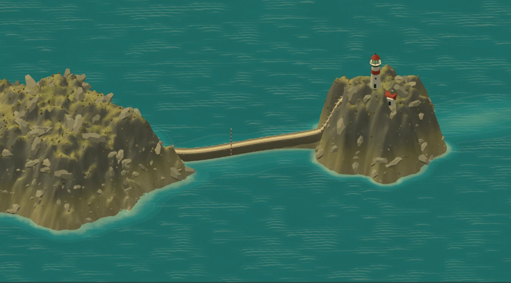

The Vanishing Road
At low tide, you can walk to the lighthouse. Will the road be there on your way back?
Water at departure
0.51 mRising
Cut off on return
At 14:05, part of the road is underwater when you reach it on the way back.
3D is unavailable. The tide chart and trip still update.
Choose a departure from 06:00 to 18:00. The lowest tide is at noon.
Mainland35 min on Lantern IslandMainland
- To the island12:55–13:19Dry
- Back to shore13:54–14:18Flooded
Last round-trip
departure
departure